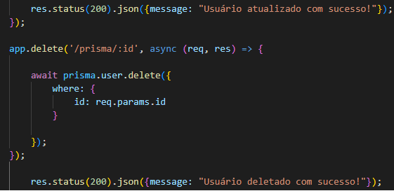

*** ANOTAÇÕES DO NODE ***
-- Introdução básica --
NPM - Gerenciador de pacotes do Node, que permite instalar bibliotecas e frameworks para o projeto.
JSON - Formato de arquivo que armazena dados em formato de objeto, muito utilizado para configuração de projetos.
Para escrever no .JSON, deve colocar as informações entre {} e usando "aspas duplas"
E pode usar {} e [] dentro do objeto:

Baixar a extensão Thunder Client
Cuidado com os terminais abertos quando for rodar o servidor, pois se tiver outro terminal aberto com o mesmo servidor rodando, ele não vai funcionar.
No arquivo package.json existe o campo "scripts": { "test": "echo \"Error: no test specified\" && exit 1" }, nele você pode criar scripts do terminal
para facilitar sua vida, exemplo: eu criei o script dev com o comando "dev": "node --watch server.js", ai para executar vc coloca no terminal npm run (nome do script).
-- Principais Funções do Terminal --
Ctrl + C - Para parar o servidor
Ctrl + L - Limpa o terminal
npm init -y - Inicia um projeto Node
npm install nome-da-biblioteca - Instala uma biblioteca
node nome-do-arquivo.js - Roda o servidor (nome q estamos usando: server.js)
node --watch nome-do-arquivo.js - Roda o servidor e reinicia automaticamente quando houver alterações no arquivo
npx prisma studio - Abre o studio do Prisma para ver os dados do banco de dados
>> Iniciando um projeto NODE
- No VS Code, abra o terminal e digite o comando npm init -y para iniciar um projeto Node.
- Depois, para instalar uma biblioteca, digite npm install nome-da-biblioteca, no caso usamos o express, então digite npm i express (i de install).
- Crie um file server.js e digite import express from 'express'
- Vá em package.json e digite "type": "module",
- Agora em server.js, digite const app = express(); e depois app.listen(3000); pronto agora seu servidor rodará na porta 3000, para começar a rodar o servidor,
digite no terminal node server.js (Ctrl + C para parar o servidor)
- Agora abra o navegador e digite localhost:3000 para acessar

>> Criando nossa primeira rota
- Em server.js, digite app.get('/usuarios', (req, res) => { e depois digite res. send ("Olá rota acessada com sucesso!");
- Agora abra o navegador e digite localhost:3000/usuarios para acessar a rota

>> Criando nossa primeira rota
É possível criar uma rota POST com o mesmo nome (usuarios) que fizemos a rota GET, mas com resposta diferente, para isso baixamos uma extensão chamada Thunder Client no
VS Code, que permite testar as rotas.

>> Códigos de Status HTTP
Os Códigos de Status HTTP são usados para indicar o sucesso ou falha de uma requisição.
Exemplos:
-- Confirmação / Sucesso
200 - OK
201 - Created
202 - Accepted
204 - No Content
-- Erro do Cliente (Front-end)
400 - Bad Request
401 - Unauthorized
403 - Forbidden
404 - Not Found
-- Erro do Servidor (Back-end)
500 - Internal Server Error
501 - Not Implemented
502 - Bad Gateway
>> Métodos HTTP
Os Métodos HTTP são formas de enviar dados para o Back-End, geralmente usados para criar, ler, atualizar e deletar informações.
GET - Buscar / Listar dados do Back-End (Servidor)
POST - Criar dados / Ex: Criar usuários
PUT - Atualizar / Editar vários dados no Back-End / Ex: usuários, produtos, etc
PATCH - Atualizar / Editar apenas um dado específico no Back-End
DELETE - Deletar dados do Back-End
>> Query Params (GET)
O Query Params é uma forma de enviar parâmetros na URL, geralmente usado para filtros e buscas.
Exemplo: localhost:3000/usuarios?nome=João&idade=25
Nesse exemplo acima identificamos o Query Param pelo ? e estamos enviando o parâmetro nome com o valor João e o parâmetro idade com o valor 25
O Front-end vai enviar os parâmetros na URL e o Back-End vai receber os parâmetros.

>> Route Params (GET, POST, DELETE)
Os Route Params são parâmetros que fazem parte da URL em si, geralmente usados para identificar informações específicas.
Exemplo: localhost:3000/usuarios/0001
Nesse exemplo acima, o valor 0001 é um parâmetro de rota que identifica um usuário específico.
Diferente do Query Params, as informações não ficam na URL, .

>> Body Params (POST e PUT)
Os Body Params são parâmetros que são enviados no body da requisição (por debaixo dos panos), geralmente usados para enviar informações mais complexas e/ou sensíveis, como objetos e arrays.
Exemplo: localhost:3000/usuarios
Obs: - Para visualizar o Body Params no console, escreva no server.js app.use(express.json());, caso contrário não será possivel viasualizar as informações.

--- Exemplo na Prática ---
A missão é : Criar um banco de dados e listar todos os usuários, (vamos simular um banco de dados e criar um banco de dados de usuários)
Para simular esse banco de dados criamos uma variável user com um array vazio ( const users = []; ).
Para "criar" algo usamos o método POST e para "listar" usamos o método GET.
Criei uma rota post banco-de-dados e coloquei a função users.push (req.body); que coloca dentro do array users o que o front-end enviar na requisição body.
E depois res.status(201).json({message: "Usuário criado com sucesso!"}) para enviar uma resposta com o código de status 201 e a mensagem.
Ficaria dessa forma:


Para listar os usuários eu criei uma rota get banco-de-dados e coloquei a função res.status(200).json(users); que envia uma resposta com o código de status 200 e o array users.
Ficaria dessa forma:

Agora se eu colocar novas informações de usuários no POST e clicarmos em "SEND" e depois clicarmos em "SEND" no GET, ele vai listar todos os usuários que foram criados.

--- Agora no banco de dados de verdade usando Prisma e MongoDB ---
Já criamos um banco de dados usando o Prisma e o MongoDB, agora vamos criar as rotas para gravar as informações no nosso banco de dados.
Agora na rota POST criamos o corpo da requisição com as informações da documenatation do Prisma e com as informações que fizemos de quais dados vamos captar,
que esta no schema.prisma, e colocamos o AWAIT e ASYNC para ter o tempo de espera para transitar as informações do front-end para o back-end e do
back-end para o banco de dados, ficando dessa forma:

>> Editando informações no banco de dados
Para editar informações no banco de dados vamos usar o método PUT, para isso, usando o a imagem acima da criação de usuários, vamos criar uma rota PUT porém com algumas alterações:
- Primeiro vamos substituir o POST e colocar o PUT
- Precisamos identificar na rota params qual usuário vamos editar, e para isso vamos usar o id, ficando dessa forma: /usuarios/:id.
- Agora trocamos o create por update.
- Na documentation do prisma tem a informação que para editarmos precisamos adicionar o where: {id: req. params.id} (Estamos falando que precisamos pegar o ID da rota params
para identificar quem será editado)
- E para finalizar podemos colocar um Status 200 que é para informar que deu tudo certo. Ficando dessa forma:

Agora para testarmos vamos no Thunder Client, podemos criar uma nova rota ou apenas duplicar a rota POST que criamos anteriormente e alteramos para PUT, colocamos
o id do usuário que queremos editar e editamos os dados, e clicamos em SEND se tudo deu certo vai aparecer a mensagem de sucesso, ficando dessa forma:

>> Deletando infos no banco de dados
Agora para deletar informações no banco de dados vamos usar o DELETE, para fazermos isso vamos fazer algumas alterações na rota PUT que criamos anteriormente.
- Primeiro vamos substituir o PUT e colocar o DELETE
- Precisamos identificar na rota params qual usuário vamos deletar, e para isso vamos usar o id, ficando dessa forma: /usuarios/:id.
- Agora trocamos o update por delete.
- Na documentation do prisma tem a informação que para deletarmos precisamos adicionar o where: {id: req. params.id} (Estamos falando que precisamos pegar o ID da rota params
para identificar quem é deletado)
- E para finalizar podemos colocar um Status 200 que é para informar que deu tudo certo. Ficando dessa forma:

Agora para testarmos vamos no Thunder Client, podemos criar uma nova rota ou apenas duplicar a rota PUT que criamos anteriormente e alteramos para DELETE, colocamos
o id do usuário que queremos deletar na URL em Query mesmo e damos um SEND se tudo deu certo vai aparecer a mensagem de sucesso, ficando dessa forma: